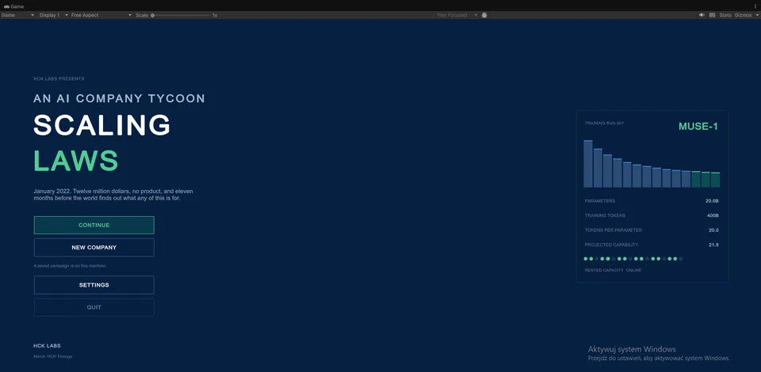
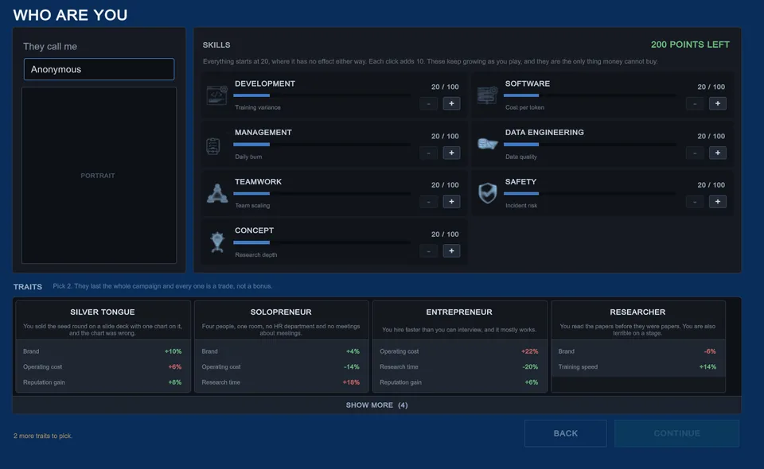
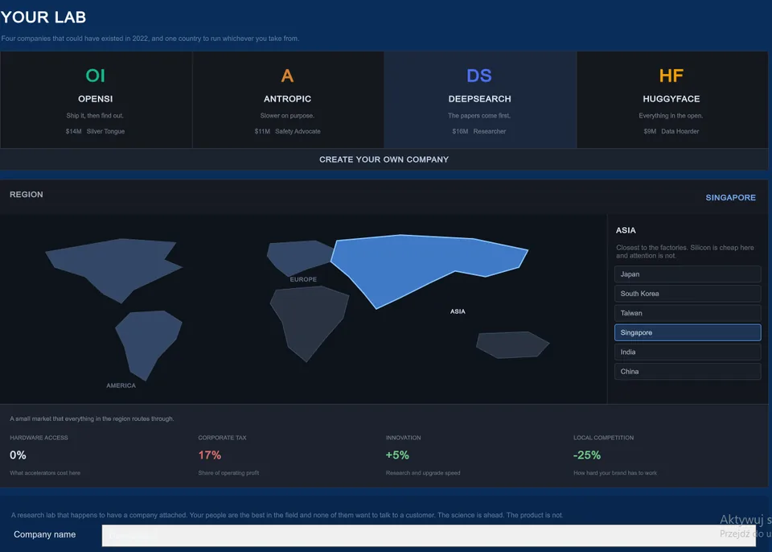
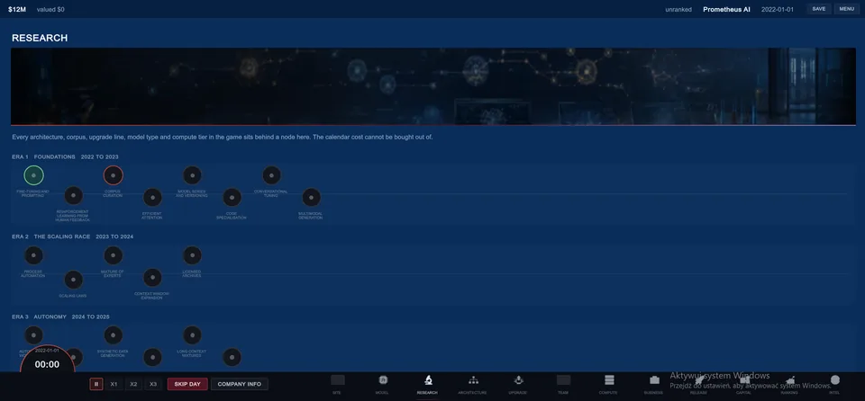
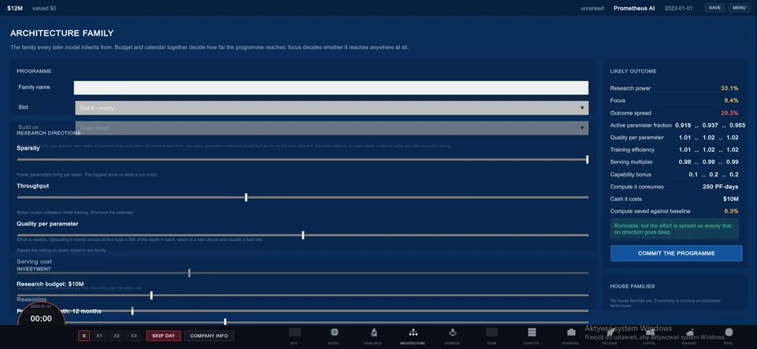
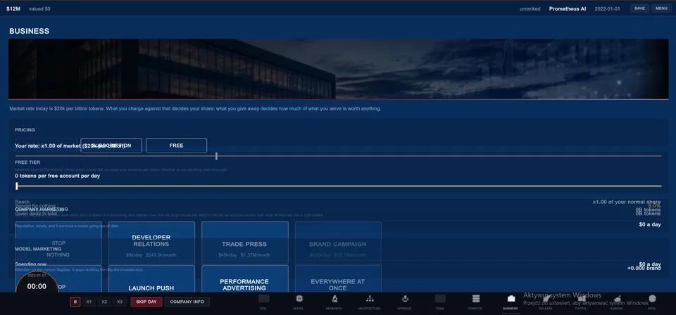

{kind=link}

Aktualny build / zrzut
Menu główne
Aktualny ekran otwierający i tożsamość gry.
Publiczny stan wizualny Scaling Laws. To są zrzuty z pracy nad prawdziwym buildem w Unity, trzymane osobno od concept artu i obietnic z roadmapy.
Ta sama sekwencja pokoju co 200 ms, której używa strona główna, leży tu w większym rozmiarze. Gdy do wspólnego manifestu dojdą nowe klatki, ta strona podchwyci je automatycznie.

Otwórz dowolny obraz, żeby dostać większy WebP 1600 px. Podpisy opisują aktualny build, a nie docelową stronę sklepową.

Aktualny ekran otwierający i tożsamość gry.

Pierwsza siedziba firmy: miejsce pracy, sypialnia, garaż i samochód.

Siedem umiejętności i cechy startowe przed rozpoczęciem kampanii.

Tożsamość firmy, region i kompromisy kraju rejestracji.

Fundament, skala, dane, moc i przegląd w jednym etapowym przepływie.

Epoki technologiczne, wymagania wstępne i bramki kalendarza.

Budżet, czas trwania, skupienie i rozrzut wyniku.

Ceny, darmowy dostęp i sterowanie marketingiem.
{kind=link}
{kind=link}
{kind=link}
{kind=link}
{kind=link}